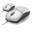

mwheel++

マウスホイールイベントを、アクティブでないウインドウにも送信できるようにします。
シンプルなプログラムですがとても便利です(Mac OSXやLinuxのGNOMEっぽい挙動になる)
English
/ Japanese
詳細
タスクトレイアイコンをダブルクリックすることで一時的に無効化させることも出来ます。(再度ダブルクリックで有効化)
ダウンロード
Windows7(32/64bit):
mwheel_plus(20110701).zip
(
PGP
)
他の環境ではテストしていませんが、もしかしたら動くかもしれません。